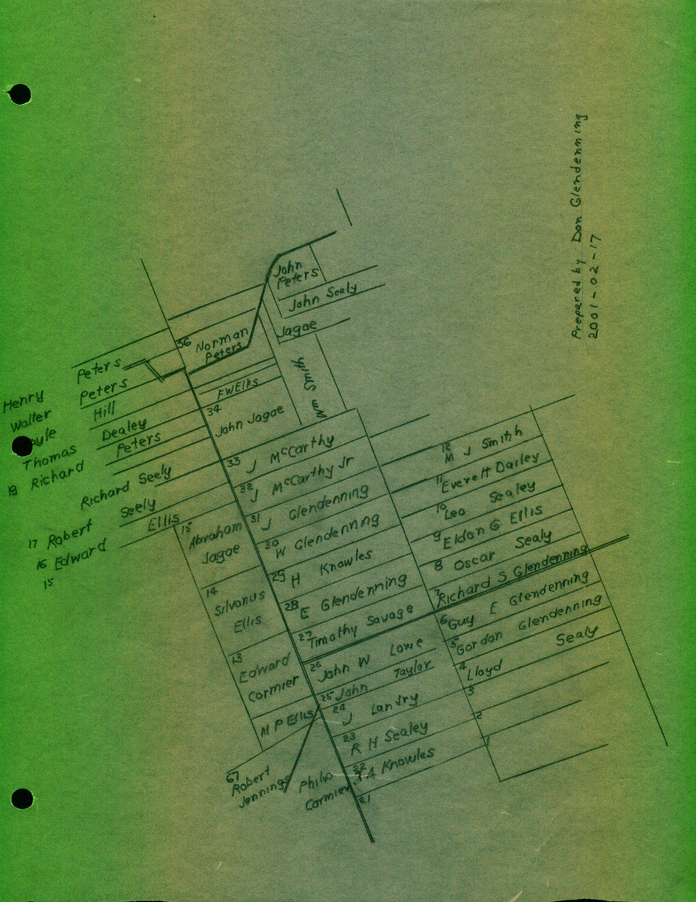

The Family Chronicle
No.19 February 19, 2001
__________
Early Names
This is a follow-up to Issues No. 17 and 18 with additional information about early names of the area taken from AGeographical Names of New Brunswick, 1875.@
Bathurst, originally named St. Peters in 1671, was named for the Third Earl of Bathurst in 1826. Canobie was named for Canonbie, Dumfriesshire, Scotland. Salmon Beach was settled around 1820 by immigrants from Ireland and included the districts of Prospect Hill, Strawberry Plain and Mount Pleasant. Janeville was named for Jane Dawson, wife of Benjamin Dawson who settled there about 1835. Stonehaven was probably named for Stonehaven, Scotland. New Bandon was settled in 1819 by several families from Bandon, Ireland.
Land Grants
The map on the reverse side, shows the location of many of the original land grants in Canobie; most, if not all, about 100 acres each. I do not have information, yet, about their later history:
36 Norman Peters 1892-03-07
35 F.W Ellis 1939-10-06
34 John Jagoe 1872-12-30
33 J. McCarthy 1882-08-12
32 J. McCarthy Jr 1868-04-29
31 J Glendenning 1868-08-17
30 Walter Glendenning 1873-02-17
29 H. Knowles 1886-02-23
28 E. Glendenning 1901-07-16
27 Timothy Savage 1874-04-20
26 John W. Lowe 1872-07-29
25 John Taylor 1873-06-27
24 Julian Landry 1904-02-26
23 R. H. Sealey 1929-11-29
22 Thomas. A. Knowles 1926-10-25
Directly across the road from the Glendenning property, we have:
15 Abraham Jagoe 1869-09-26
14 Silvanus Ellis 1890-11-25
13 Edward Cormier 1899-08-31
In Springfield Settlement we find:
7 Richard S. Glendenning 1942-05-27
6 Guy E. Glendenning 1946-06-21
5 Gordon Glendenning 1946-10-30
Observations
- my maps show John and Walter Glendenning but my record book shows Glendinning.
-John Glendinning, Sr. is believed to have purchased part of Lot No. 7 at Salmon Beach from Fidele and Joseph Arceneau; about 1855 he sold the land to Abram Buttimer and moved from Salmon Beach to Canobie
- my Canobie records show John Glendenning, Junior not Senior. If he moved to Canobie. His land was not an original grant; he may have lived with one of his sons.
The Chronicle is an occasional newsletter published by Don Glendenning It is intended to solicit and provide information about family tree matters. Comments, enquiries and information may be sent to 62 Queen Elizabeth Drive, Charlottetown, PEI, C1A 3A9. Tel:902 892 5859 Email dglende@attglobal.net. Feel free to make and pass along copies of this newsletter.
